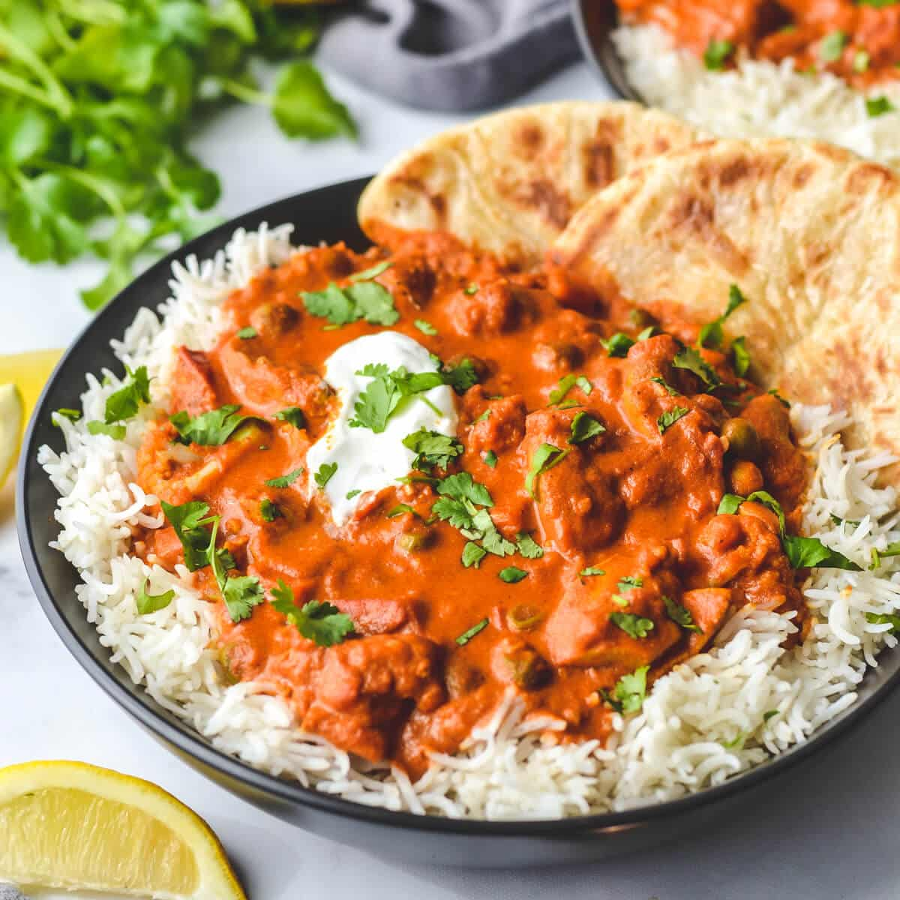

Chicken tikka masala
Description

With aromatic golden chicken pieces swimming in an incredible curry sauce, this Chicken Tikka Masala is one of the best Indian dishes!
Ingredients
Marinade
- 800 g boneless and skinless chicken breasts cut into bite-sized pieces
- 1 cup plain yogurt
- 1 and 1/2 tbsp minced garlic
- 1 tbsp ginger
- 2 tsp garam masala
- 1 tsp turmeric
- 1 tsp ground cumin
- Chili and salt to taste
Sauce
- 2 tbsp vegetable oil
- 2 tbsp butter
- 2 small finely diced onions
- 1 and 1/2 tbsp finely grated garlic
- 1 tbsp finely grated ginger
- 1 and 1/2 tsp garam masala
- 1 and 1/2 tsp ground cumin
- 1 tsp turmeric powder
- 1 tsp ground coriander
- 400 g tomato puree (sauce/passata)
- 1 and 1/4 cups of heavy or thickened cream
- 1 tsp brown sugar
- 1/4 cup of water, if needed
- Chili and salt to taste
- Cilantro or coriander to garnish
Steps
- Mix all ingredients for the marinade in a bowl, let marinate for 10 minutes to an hour (idealy overnigh)
- Heat oil in a large skillet or a pot over medium-high heat
- When sizzling, add chicken pieces in batches of two or three, do not overcrowd the pan
- Fry on each side for about 3 minutes each, set aside and keep warm. Chicken will be cooked in the sauce later
- Melt the butter in the same pan and fry the onions until soft (about 3 minutes)
- Add garlic and ginger and saute for a minute until fragrant
- Add garam masala, cumin, turmeric and coriander and fry for about 20 seconds until fragrant while stirring
- Pour in the tomato puree, chili and salt and let simmer for 10-15 minutes, stirring occasionally until sauce thickens and becomes deep brown red in color
- Stir the cream and sugar through the sauce
- Add the chicken and its juices back into the pan and cook for additional 8-10 minutes until chicken is cooked-through. Add water if the sauce is too thick
- Garnish with cilantro or coriander and serve with rice (ideally Basmati) or naan!